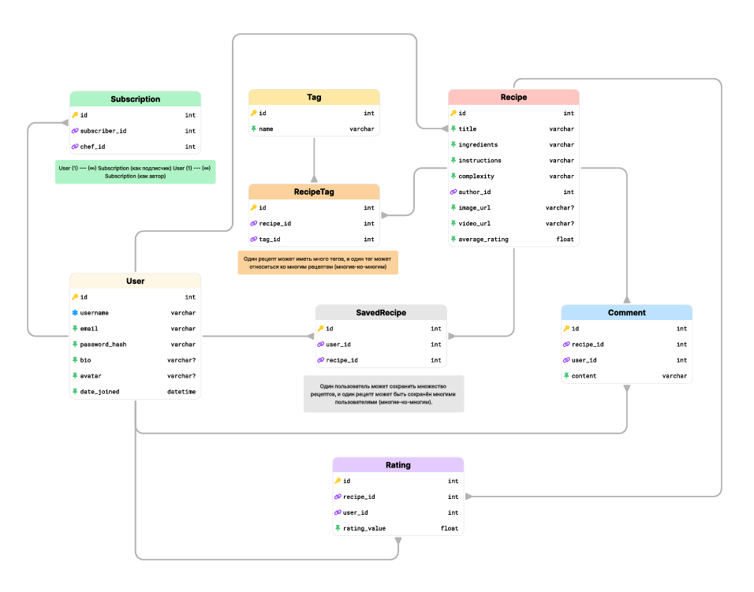
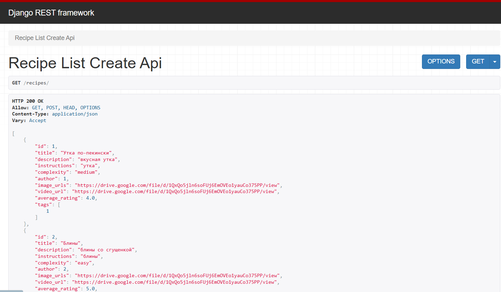
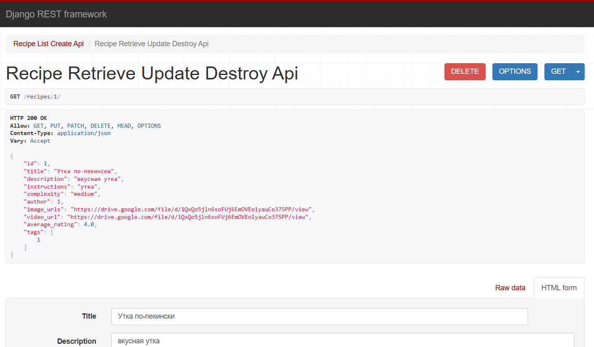
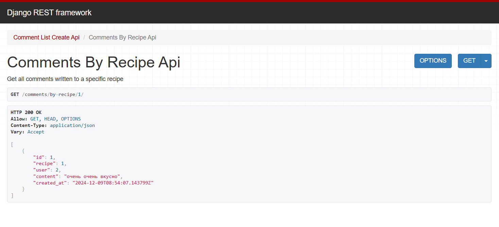
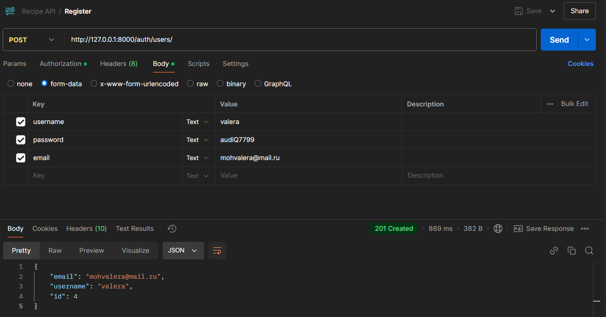
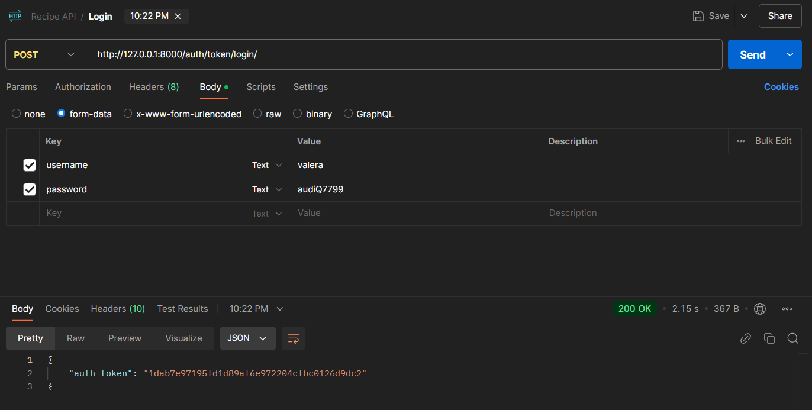
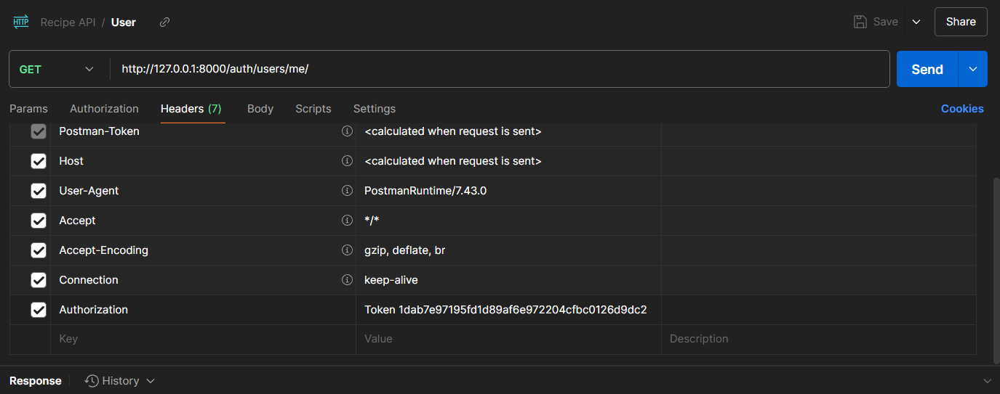
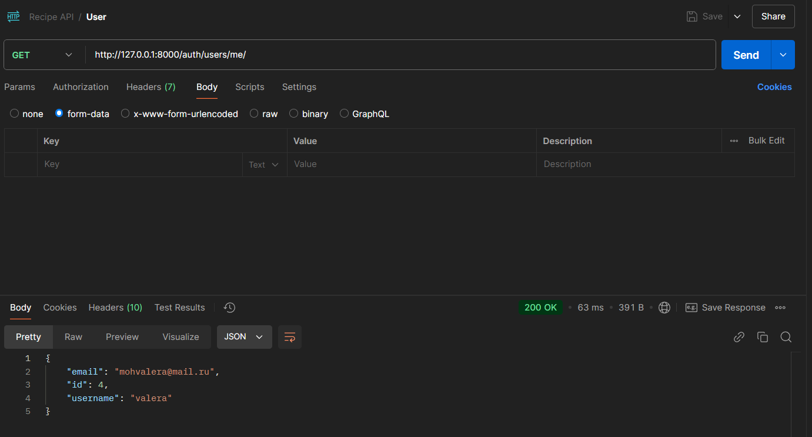

Django REST Framework
Реализация серверной части приложения средствами Django и DjangoRestFramework
Реализовать сайт, используя фреймворк Django 3, Django REST Framework, Djoser и СУБД в соответствии с вариантом задания лабораторной работы.
Вариант: система обмена рецептами
- Реализовать модель базы данных средствами DjangoORM (согласовать с преподавателем на консультации).
- Реализовать логику работы API средствами Django REST Framework (используя методы сериализации).
- Подключить регистрацию / авторизацию по токенам / вывод информации о текущем пользователе средствами Djoser.
Модель БД

Модели Django
from django.db import models
from django.contrib.auth.models import AbstractUser
from django.conf import settings
# Create your models here.
class User(AbstractUser):
bio = models.TextField(blank=True, null=True)
date_joined = models.DateTimeField(auto_now_add=True)
def str(self):
return self.username
class Recipe(models.Model):
COMPLEXITY_CHOICES = [
('easy', 'Легко'),
('medium', 'Средне'),
('hard', 'Трудно'),
]
title = models.CharField(max_length=255)
description = models.TextField()
instructions = models.TextField()
complexity = models.CharField(max_length=50, choices=COMPLEXITY_CHOICES)
author = models.ForeignKey(settings.AUTH_USER_MODEL, related_name='recipes', on_delete=models.CASCADE)
image_urls = models.URLField(blank=True, null=True)
video_url = models.URLField(blank=True, null=True)
average_rating = models.FloatField(default=0)
def str(self):
return self.title
class Tag(models.Model):
name = models.CharField(max_length=100, unique=True)
def str(self):
return self.name
class RecipeTag(models.Model):
recipe = models.ForeignKey(Recipe, related_name='tags', on_delete=models.CASCADE)
tag = models.ForeignKey(Tag, related_name='recipes', on_delete=models.CASCADE)
def str(self):
return f'{self.recipe.title} - {self.tag.name}'
class Comment(models.Model):
recipe = models.ForeignKey(Recipe, related_name='comments', on_delete=models.CASCADE)
user = models.ForeignKey(settings.AUTH_USER_MODEL, related_name='comments', on_delete=models.CASCADE)
content = models.TextField()
created_at = models.DateTimeField(auto_now_add=True)
def str(self):
return f'Comment by {self.user.username} on {self.recipe.title}'
class SavedRecipe(models.Model):
user = models.ForeignKey(settings.AUTH_USER_MODEL, related_name='saved_recipes', on_delete=models.CASCADE)
recipe = models.ForeignKey(Recipe, related_name='saved_by', on_delete=models.CASCADE)
def str(self):
return f'{self.user.username} saved {self.recipe.title}'
class Subscription(models.Model):
subscriber = models.ForeignKey(settings.AUTH_USER_MODEL, related_name='subscriptions', on_delete=models.CASCADE)
chef = models.ForeignKey(settings.AUTH_USER_MODEL, related_name='subscribers', on_delete=models.CASCADE)
def str(self):
return f'{self.subscriber.username} follows {self.chef.username}'
class Rating(models.Model):
recipe = models.ForeignKey(Recipe, related_name='ratings', on_delete=models.CASCADE)
user = models.ForeignKey(settings.AUTH_USER_MODEL, related_name='ratings', on_delete=models.CASCADE)
rating_value = models.PositiveSmallIntegerField()
def str(self):
return f'Rating {self.rating_value} by {self.user.username} for {self.recipe.title}'
Эндпоинты
Для каждой модели была реализована логика работы API - CRUD-запросы. Пример views для СRUD-запросов модели Recipe:
# Recipe Views
class RecipeListCreateAPIView(generics.ListCreateAPIView):
queryset = Recipe.objects.all()
serializer_class = RecipeSerializer
class RecipeRetrieveUpdateDestroyAPIView(generics.RetrieveUpdateDestroyAPIView):
queryset = Recipe.objects.all()
serializer_class = RecipeSerializer


Также были реализованы аналитические запросы:
- Получение списка подписчиков пользователя по его id
- Получение списка подписок пользователя по его id
- Получение списка сохранённых рецептов по id пользователя
- Получение всех оценок пользователя по его id
- Получение добавленных пользователем рецептов по его id
- Получение всех написанных пользователем комментариев по его id
- Получение всех рецептов, относящихся к конкретному тегу
- Получение всех комментариев к рецепту по id рецепта
- Получение всех оценок к рецепту по id рецепта
- Получение рецепта, к которому написан комментарий, по id комментария
- Получение оцененного рецепта по id оценки
Views для аналитических запросов:
class UserRecipesAPIView(generics.ListAPIView):
"""
Get all recipes created by a specific user
"""
serializer_class = RecipeSerializer
def get_queryset(self):
user_id = self.kwargs['user_id']
return Recipe.objects.filter(author_id=user_id)
class UserCommentsAPIView(generics.ListAPIView):
"""
Get all comments written by a specific user
"""
serializer_class = CommentSerializer
def get_queryset(self):
user_id = self.kwargs['user_id']
return Comment.objects.filter(user_id=user_id)
class UserSavedRecipesAPIView(generics.ListAPIView):
"""
Get all saved recipes for a specific user
"""
serializer_class = SavedRecipeSerializer
def get_queryset(self):
user_id = self.kwargs['user_id']
return SavedRecipe.objects.filter(user_id=user_id)
class UserSubscriptionsAPIView(generics.ListAPIView):
"""
Get all subscriptions for a specific user
"""
serializer_class = SubscriptionSerializer
def get_queryset(self):
user_id = self.kwargs['user_id']
return Subscription.objects.filter(subscriber_id=user_id)
class UserSubscribersAPIView(generics.ListAPIView):
"""
Get all subscribers of a specific user
"""
serializer_class = SubscriptionSerializer
def get_queryset(self):
user_id = self.kwargs['user_id']
return Subscription.objects.filter(chef_id=user_id)
class UserRatingsAPIView(generics.ListAPIView):
"""
Get all ratings given to a user's recipes
"""
serializer_class = RatingSerializer
def get_queryset(self):
user_id = self.kwargs['user_id']
return Rating.objects.filter(recipe__author_id=user_id)
class RecipesByTagAPIView(generics.ListAPIView):
"""
Get all recipes by a specific tag
"""
serializer_class = RecipeSerializer
def get_queryset(self):
tag_id = self.kwargs['tag_id']
return Recipe.objects.filter(tags__id=tag_id)
class CommentsByRecipeAPIView(generics.ListAPIView):
"""
Get all comments written to a specific recipe
"""
serializer_class = CommentSerializer
def get_queryset(self):
recipe_id = self.kwargs['recipe_id']
return Comment.objects.filter(recipe__id=recipe_id)
class RatingsByRecipeAPIView(generics.ListAPIView):
"""
Get all ratings to specific recipe
"""
serializer_class = RatingSerializer
def get_queryset(self):
recipe_id = self.kwargs['recipe_id']
return Rating.objects.filter(recipe__id=recipe_id)
class RecipeByCommentAPIView(generics.RetrieveAPIView):
"""
Get recipe by a comment
"""
serializer_class = RecipeSerializer
def get_object(self):
comment_id = self.kwargs['comment_id']
comment = Comment.objects.get(id=comment_id)
return comment.recipe
Пример работы аналитического запроса:

Все эндпоинты:
from django.urls import path, include
from .views import *
app_name = "recipes_app"
urlpatterns = [
path('auth/', include('djoser.urls')),
path('auth/', include('djoser.urls.authtoken')),
# User
path('users/', UserListCreateAPIView.as_view(), name='user-list-create'),
path('users/<int:pk>/', UserRetrieveUpdateDestroyAPIView.as_view(), name='user-detail'),
path('users/<int:user_id>/subscriptions/', UserSubscriptionsAPIView.as_view(), name='user-subscriptions'),
path('users/<int:user_id>/subscribers/', UserSubscribersAPIView.as_view(), name='user-subscribers'),
path('users/<int:user_id>/recipes/', UserRecipesAPIView.as_view(), name='user-recipes'),
path('users/<int:user_id>/saved-recipes/', UserSavedRecipesAPIView.as_view(), name='user-saved-recipes'),
path('users/<int:user_id>/comments/', UserCommentsAPIView.as_view(), name='user-comments'),
path('users/<int:user_id>/ratings/', UserRatingsAPIView.as_view(), name='user-ratings'),
# Recipe
path('recipes/', RecipeListCreateAPIView.as_view(), name='recipe-list-create'),
path('recipes/<int:pk>/', RecipeRetrieveUpdateDestroyAPIView.as_view(), name='recipe-detail'),
path('recipes/by-tag/<int:tag_id>/', RecipesByTagAPIView.as_view(), name='recipes-by-tag'),
path('recipes/by-comment/<int:comment_id>/', RecipeByCommentAPIView.as_view(), name='recipe-by-comment'),
# Tag
path('tags/', TagListCreateAPIView.as_view(), name='tag-list-create'),
path('tags/<int:pk>/', TagRetrieveUpdateDestroyAPIView.as_view(), name='tag-detail'),
# RecipeTag
path('recipe-tags/', RecipeTagListCreateAPIView.as_view(), name='recipetag-list-create'),
path('recipe-tags/<int:pk>/', RecipeTagRetrieveUpdateDestroyAPIView.as_view(), name='recipetag-detail'),
# Comment
path('comments/', CommentListCreateAPIView.as_view(), name='comment-list-create'),
path('comments/<int:pk>/', CommentRetrieveUpdateDestroyAPIView.as_view(), name='comment-detail'),
path('comments/by-recipe/<int:recipe_id>/', CommentsByRecipeAPIView.as_view(), name='comments-by-recipe'),
# SavedRecipe
path('saved-recipes/', SavedRecipeListCreateAPIView.as_view(), name='savedrecipe-list-create'),
path('saved-recipes/<int:pk>/', SavedRecipeRetrieveUpdateDestroyAPIView.as_view(), name='savedrecipe-detail'),
# Subscription
path('subscriptions/', SubscriptionListCreateAPIView.as_view(), name='subscription-list-create'),
path('subscriptions/<int:pk>/', SubscriptionRetrieveUpdateDestroyAPIView.as_view(), name='subscription-detail'),
# Rating
path('ratings/', RatingListCreateAPIView.as_view(), name='rating-list-create'),
path('ratings/<int:pk>/', RatingRetrieveUpdateDestroyAPIView.as_view(), name='rating-detail'),
path('ratings/by-recipe/<int:recipe_id>/', RatingsByRecipeAPIView.as_view(), name='ratings-by-recipe'),
]
Регистрация и авторизация
Подключаем djoser:
INSTALLED_APPS = [
'django.contrib.admin',
'django.contrib.auth',
'django.contrib.contenttypes',
'django.contrib.sessions',
'django.contrib.messages',
'django.contrib.staticfiles',
'rest_framework',
'rest_framework.authtoken',
'djoser',
'recipes_app'
]
REST_FRAMEWORK = {
'DEFAULT_AUTHENTICATION_CLASSES': (
'rest_framework.authentication.TokenAuthentication',
),
'DEFAULT_PERMISSION_CLASSES': (
'rest_framework.permissions.AllowAny',
),
}
from django.contrib import admin
from django.urls import path, include
urlpatterns = [
path('admin/', admin.site.urls),
path('', include('recipes_app.urls')),
]
Для того, чтобы запросы были доступны только авторизованному пользователю, нужно поменять rest_framework.permissions на IsAuthenticated. Далее устанавливаем postman и отправляем запрос на регистрацию:

Авторизуем зарегистрированного пользователя и присваиваем ему токен:

Выводим информацию о текущем пользователе, отправив get-запрос на сервер. Для этого в headers запроса добавляем токен:

